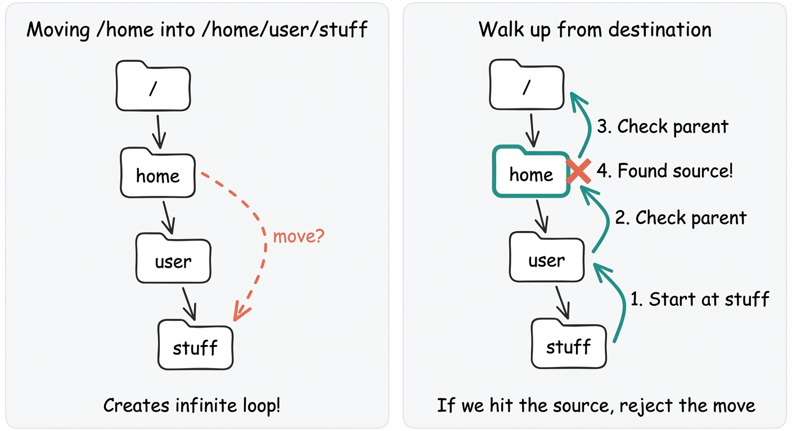
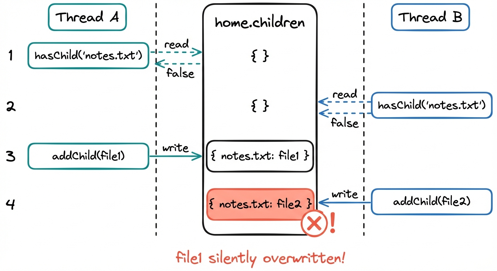

Common Problems
File System
Understanding the Problem
📁 What is an In-Memory File System?
You already know what a file system is, you use one every day. Open Finder or Windows Explorer, and you're navigating folders, creating files, moving things around. An in-memory file system is just that, minus the disk. Everything lives in RAM, which means we get to focus purely on the data structures and operations without worrying about persistence, caching, or I/O performance.
Requirements
When the interview starts, you'll get something like:
"Design an in-memory file system that supports creating files and directories, navigating paths, and basic file operations."
File systems are familiar territory, which makes this problem deceptively tricky. Everyone knows how file systems work from using their computer, so candidates often skip clarification and start designing immediately. That's a mistake. The interviewer has specific expectations about scope, and your mental model of "file system" might not match theirs.
Clarifying Questions
Structure your questions around what the system does, what the structure looks like, and what's explicitly out of scope.
Here's how the conversation might go:
You: "For the hierarchy, are we dealing with a single root like Unix, or multiple roots like Windows drive letters?"Interviewer: "Single root. Keep it Unix-style with paths like /home/user/file.txt."
That simplifies path resolution significantly.
You: "What operations do we need to support? I'm thinking create, delete, list contents. Anything else?"Interviewer: "Those plus move and rename. You should also be able to navigate to any path and get its contents."
You: "For files specifically, do they store actual content, or are they just names in the tree?"Interviewer: "They should store content. Simple string content is fine."
You: "What about error cases? If someone tries to create a file at a path where the parent folder doesn't exist, or tries to delete the root?"Interviewer: "Those should throw exceptions. Use specific exception types so callers can handle different failure modes appropriately."
You: "What scale are we targeting? Dozens of files, or potentially thousands?"Interviewer: "Assume tens of thousands of entries. It should stay responsive even with deep folder hierarchies."
Worth knowing. This will influence data structure choices later.
You: "Last question. What's out of scope? Permissions, timestamps, symbolic links?"Interviewer: "All out of scope. Focus on the core tree structure and operations."
Final Requirements
After that back-and-forth, you'd write this on the whiteboard:
Final Requirements
Requirements:
1. Hierarchical file system with single root directory
2. Files store string content
3. Folders contain files and other folders
4. Create and delete files and folders
5. List contents of a folder
6. Navigate/resolve absolute paths (e.g., /home/user/docs)
7. Rename and move files and folders
8. Retrieve full path from any file/folder reference
9. Scale to tens of thousands of entries in memory
Out of Scope:
- Search functionality
- Relative path resolution (../ or ./)
- Permissions, ownership, timestamps
- File type-specific behavior
- Persistence / disk storage
- Symbolic links
- UI layerWe've scoped the problem tightly. Now we know exactly what to build.
Core Entities and Relationships
With requirements clear, we need to identify the objects that make up this system.
Scan the requirements for nouns that represent things with state or behavior:
File - Definitely an entity. A file has a name, stores content, and exists at a specific location in the tree. It's a leaf node that can't contain other entries.
Folder (or Directory) - Also clearly an entity. A folder has a name and contains other entries, either files or more folders. Unlike a file, it doesn't store content. It's a container.
Path - Paths appear throughout our requirements, but is a path an entity? Not really. A path is a string that identifies a location, like /home/user/docs. It's an input to operations, not something with its own state or behavior. We'll parse paths, but we won't model them as a class.
FileSystem - Something needs to own the root folder and provide the public API. When someone says createFile("/home/user/notes.txt", "hello"), something needs to parse that path, navigate to /home/user, and create the file. That orchestration logic needs a home. Whether we actually need a separate class for this or can just use the root Folder directly is debatable - we'll weigh those tradeoffs in class design.
After filtering, we have three entities:
| Entity | Responsibility |
|---|---|
| FileSystem | The orchestrator. Owns the root folder, parses paths, and provides the public API for all operations. External code interacts with this class, never directly with folders or files. |
| Folder | Represents a directory. Has a name, contains child entries (files or other folders), and provides methods to add, remove, and look up children. Doesn't know about paths or the broader tree structure. |
| File | Represents a file. Has a name and stores content. A leaf node with no children. |
The relationships form a simple tree:
FileSystem
└── root: Folder
├── Folder ("home")
│ └── Folder ("user")
│ ├── File ("notes.txt")
│ └── Folder ("docs")
└── File ("readme.txt")FileSystem owns the root Folder. Each Folder can contain any mix of Files and other Folders. Files are leaf nodes. The tree can be arbitrarily deep.
Class Design
With entities identified, it's time to define their interfaces. For each class, we'll determine what state it holds and what operations it supports, tying everything back to our requirements.
FileSystem
Many candidates start without a FileSystem class at all. They just expose the root Folder and let callers navigate from there. This can work, but it runs into some issues. Let's weigh the tradeoffs.
Approach
Some candidates think: "The root is just a Folder. I'll make that public and let callers navigate from there." The API becomes:
root = Folder("/")
home = root.createFolder("home")
user = home.createFolder("user")
file = user.createFile("notes.txt", "hello")Callers navigate the tree manually, creating entries relative to whatever folder they're holding.
Challenges
This pushes too much work onto callers. If someone wants to create /home/user/docs/report.txt, they need to:
- Parse the path string themselves
- Navigate through each folder: root → home → user → docs
- Handle the case where intermediate folders don't exist
- Create the file at the end
Every caller reimplements path resolution. That logic gets duplicated everywhere. And there's no clear "entry point" to the system. Callers need to track the root folder themselves and pass it around.
The system works, but it's awkward to use. Every caller reimplements the same path parsing and navigation logic, violating Don't Repeat Yourself.
Approach
Create a FileSystem class that owns the root and handles all path-based operations:
fs = FileSystem()
fs.createFolder("/home")
fs.createFolder("/home/user")
fs.createFile("/home/user/notes.txt", "hello")All operations take absolute paths. FileSystem parses paths, navigates the tree, validates operations, and delegates to the appropriate Folder or File.
This is the Facade pattern. FileSystem hides the complexity of tree navigation behind a simple path-based API. Callers don't need to know about the internal structure.
Benefits
Path parsing happens in one place. The public API is clean and intuitive. Callers don't need to manually navigate or track folder references. All the messy details of splitting paths, handling edge cases, and validating operations are encapsulated.
Having weighed the options, we feel confident with the orchestrator approach. Let's proceed with the FileSystem class and derive its state from requirements:
| Requirement | What FileSystem must track |
|---|---|
| "Hierarchical file system with single root" | The root folder |
| "Navigate/resolve absolute paths" | (Derived from root via path parsing) |
That's it. FileSystem only needs to store the root:
FileSystem State
class FileSystem:
- root: FolderNow for operations. Every method on FileSystem should correspond to a requirement:
| Need from requirements | Method on FileSystem |
|---|---|
| "Create files at specified paths" | createFile(path, content) returns File, throws on error |
| "Create folders at specified paths" | createFolder(path) returns Folder, throws on error |
| "Delete files and folders" | delete(path) throws on error |
| "List contents of a folder" | list(path) returns list of entries, throws on error |
| "Navigate/resolve absolute paths" | get(path) returns entry, throws if not found |
| "Rename files and folders" | rename(path, newName) throws on error |
| "Move files and folders" | move(srcPath, destPath) throws on error |
Since FileSystem is the entry point for external code, all the operations users need on a file system map directly to public methods on this class. Putting it together:
FileSystem
class FileSystem:
- root: Folder
+ FileSystem()
+ createFile(path, content) -> File
+ createFolder(path) -> Folder
+ delete(path)
+ list(path) -> List<FileSystemEntry>
+ get(path) -> FileSystemEntry
+ rename(path, newName)
+ move(srcPath, destPath)The constructor creates an empty root folder. All public methods take paths and throw exceptions on failure (invalid path, entry not found, name collision, etc.).
File
Let's start with the simpler entity. A file is a leaf node that stores content:
| Requirement | What File must track |
|---|---|
| "Files store string content" | content: string |
| "Retrieve full path from any reference" | Need some way to compute the path |
That last requirement is interesting. We need entries to know their location in the tree. There are two ways to do this:
Approach
Each entry stores its full path as a string field:
class File:
- name: string
- path: string // e.g., "/home/user/notes.txt"
- content: stringgetPath() just returns the stored string. Simple and O(1).
Challenges
What happens when you rename a folder? If you rename /home to /house, you need to update the path of every single entry underneath it. That folder might contain thousands of files and subfolders, each with a path string that now has the wrong prefix.
rename("/home", "house")
→ update "/home" to "/house"
→ update "/home/user" to "/house/user"
→ update "/home/user/docs" to "/house/user/docs"
→ update "/home/user/docs/report.txt" to "/house/user/docs/report.txt"
→ ... hundreds more ...Move operations have the same problem. A simple rename becomes O(n) where n is the number of descendants. For a file system with deep hierarchies, this gets expensive fast.
Approach
Each entry stores a reference to its parent folder instead of its path:
class File:
- name: string
- parent: Folder?
- content: stringgetPath() walks up through parent pointers to the root, collecting names:
getPath()
if parent == null
return name // Root returns "/"
parentPath = parent.getPath()
if parentPath == "/"
return "/" + name
else
return parentPath + "/" + nameRename and move operations only update the entry itself - change its name or parent pointer, and you're done. All descendants automatically have correct paths because paths are computed dynamically by walking up the tree.
The tradeoff is getPath() is now O(depth) instead of O(1). But file system depths are typically small (10-20 levels max), so this is negligible. And you avoid the nightmare of cascading updates on every rename or move. You can also cache the path string if you want to optimize for performance by using a memoization technique.
Challenges
We now have bidirectional references. Children point to parents, and parents (via the children map) point to children. When moving entries, we need to update both sides and make sure we keep them in sync.
The parent pointer approach wins. Let's update the table:
| Requirement | What File must track |
|---|---|
| "Files store string content" | content: string |
| "Retrieve full path from any reference" | parent: Folder? (to walk up the tree) |
File
class File:
- name: string
- content: string
- parent: Folder?
+ File(name, content)
+ getName() -> string
+ setName(name)
+ getContent() -> string
+ setContent(content)
+ getParent() -> Folder?
+ setParent(Folder?)
+ getPath() -> string
+ isDirectory() -> falseFolder
Folder is a container that holds other entries:
| Requirement | What Folder must track |
|---|---|
| "Folders contain files and other folders" | Collection of child entries |
| "List contents of a folder" | Need to enumerate children |
| "Navigate paths" | Need to look up children by name |
| "Retrieve full path from any reference" | parent: Folder? |
The children collection needs some thought. What data structure should we use?
Approach
Store children as a simple list:
class Folder:
- children: List<????>
getChild(name):
for child in children:
if child.getName() == name:
return child
return nullChallenges
Think about how path resolution actually works. When someone asks for /home/user/docs/report.txt, we need to walk the tree level by level: first find "home" inside root, then find "user" inside home, then "docs" inside user, and finally "report.txt" inside docs. At each level, we're searching for a child by name.
With a list, that search means scanning every child until we find a match. If a folder has 1000 files, we might compare against all 1000 names just to find the one we want. That's O(n) per lookup. Now multiply that across every level of the path, and across every operation the system handles. It adds up fast.
Our requirements say we need to scale to tens of thousands of entries while staying responsive. A list-based lookup simply won't cut it at that scale.
Approach
Store children in a map keyed by name:
class Folder:
- children: Map<string, ????>
getChild(name):
return children.get(name) // O(1)Benefits
With a map, looking up a child by name is O(1) regardless of how many siblings exist. A folder with 10 files or 10,000 files takes the same time to find "notes.txt". Path resolution stays snappy even in deeply nested structures with lots of files at each level.
Beyond performance, maps give us a nice bonus: they naturally enforce unique names within a folder since keys must be unique. You can't accidentally have two files both named "notes.txt" in the same directory. The data structure itself prevents that invalid state.
We'll use a Map for O(1) lookups. We also keep the map private and expose methods like addChild(), removeChild(), and getChild() rather than exposing the map directly. This lets Folder control its own invariants. Callers can't accidentally add an entry without properly setting up the parent pointer, and we have a single place to enforce any validation rules.
Folder
class Folder:
- name: string
- parent: Folder?
- children: Map<string, ????>
+ Folder(name)
+ getName() -> string
+ setName(name)
+ getParent() -> Folder?
+ setParent(Folder?)
+ getPath() -> string
+ isDirectory() -> true
+ addChild(entry) -> boolean
+ removeChild(name) -> ????
+ getChild(name) -> ????
+ hasChild(name) -> boolean
+ getChildren() -> List<????>Shared Abstraction: FileSystemEntry
Looking at File and Folder side by side, there's obvious duplication. Both have:
- name and parent fields
- getName(), setName(), getParent(), setParent(), getPath() methods
- An isDirectory() method (returning different values)
And we still have those ???? type placeholders in Folder's children collection. What type should that be? If File and Folder are completely separate classes, we'd need Object and cast everywhere.
This duplication isn't coincidental. A file system is a tree, and File and Folder are both nodes in that tree. Every node has a name. Every node has a parent. Every node can report its path from the root. The differences like whether a node stores content or contains children, or the children collection type are secondary to this shared identity.
When you notice duplication like this, it's usually a signal that there's a missing abstraction. The classes have something fundamental in common that isn't captured in your design yet.
Let's explore our options for a shared abstraction.
Approach
Define an interface that both implement:
interface FileSystemEntry:
getName() -> string
isDirectory() -> boolean
class File implements FileSystemEntry:
// ...
class Folder implements FileSystemEntry:
// ...Now the children collection can be Map<string, FileSystemEntry>, and we can work with entries polymorphically.
Tradeoffs
This solves the typing problem but doesn't eliminate duplication. Both File and Folder still have their own name field and their own getName() implementation. If we add a parent pointer, both need it. The interface defines the contract but doesn't share implementation.
For simple cases with one shared field, this is fine. But we have significant shared behavior here.
Approach
Define an abstract class with shared state and behavior:
abstract class FileSystemEntry:
- name: string
- parent: Folder?
+ getName() -> string
+ getParent() -> Folder?
+ setParent(Folder?)
+ getPath() -> string
+ isDirectory() -> boolean // abstract
class File extends FileSystemEntry:
- content: string
+ isDirectory() -> false
class Folder extends FileSystemEntry:
- children: Map<string, FileSystemEntry>
+ isDirectory() -> trueFile and Folder inherit the shared fields (name, parent) and shared methods (getName(), getPath()). Each implements isDirectory() to identify its type.
Why This Works Here
Inheritance gets a bad reputation, often deservedly. But it's appropriate when:
- Subtypes genuinely share behavior, not just data
- That behavior is stable and unlikely to change
- Both subtypes satisfy "is-a" relationship with the base
File and Folder both "are" file system entries. They both have names. They both have parents. They both can report their path. This shared behavior is fundamental to what they are, not incidental. The hierarchy won't change, because trees always have nodes with names and parents.
This structure is known as the Composite pattern. The core idea is simple: when you have a tree where some nodes are "leaves" (can't contain children) and others are "composites" (can contain children), give them a common interface so code can treat them uniformly. Here, File is the leaf, Folder is the composite, and FileSystemEntry is their shared interface. The pattern shows up whenever you're modeling hierarchical structures like file systems, UI component trees, or organizational charts.
In an interview, you don't need to name the pattern. The structure emerges naturally once you recognize that files and folders share identity (name, parent, path) but differ in containment (folders have children, files don't).
The abstract base class eliminates our duplication and gives us a proper type for the children collection. Let's update our designs accordingly.
Final Class Design
Here's the complete design:
Final Class Design
abstract class FileSystemEntry:
- name: string
- parent: Folder?
+ FileSystemEntry(name)
+ getName() -> string
+ setName(name)
+ getParent() -> Folder?
+ setParent(Folder?)
+ getPath() -> string
+ isDirectory() -> boolean // abstract
class File extends FileSystemEntry:
- content: string
+ File(name, content)
+ getContent() -> string
+ setContent(content)
+ isDirectory() -> false
class Folder extends FileSystemEntry:
- children: Map<string, FileSystemEntry>
+ Folder(name)
+ isDirectory() -> true
+ addChild(entry) -> boolean
+ removeChild(name) -> FileSystemEntry?
+ getChild(name) -> FileSystemEntry?
+ hasChild(name) -> boolean
+ getChildren() -> List<FileSystemEntry>
class FileSystem:
- root: Folder
+ FileSystem()
+ createFile(path, content) -> File
+ createFolder(path) -> Folder
+ delete(path)
+ list(path) -> List<FileSystemEntry>
+ get(path) -> FileSystemEntry
+ rename(path, newName)
+ move(srcPath, destPath)The design has clear separation of concerns:
FileSystem handles orchestration. It owns the public API, parses paths, and coordinates operations across the tree. It doesn't store content or manage parent-child relationships directly.
FileSystemEntry captures shared identity. Both files and folders have names, exist somewhere in the tree, and can report their path. The abstract base eliminates duplication.
Folder manages containment. It knows its children and provides methods to manipulate them. It doesn't know about paths or the broader tree.
File stores content. It's a leaf node with no children and no containment logic.
Implementation
With the class design complete, we're ready to implement the methods. Before diving in, check with your interviewer about what level of detail they want. Some want working code, others want pseudocode, some just want you to talk through the logic. We'll use pseudocode here, with full implementations in multiple languages at the end.
For each method, we'll follow this pattern:
- Define the core logic - What happens when everything goes right
- Handle edge cases - Invalid paths, missing entries, name collisions
The interesting work lives in FileSystem, where path resolution and tree manipulation happen. The other classes are mostly straightforward data management.
We're assuming single-threaded access for now. Concurrency adds significant complexity - race conditions on create, deadlocks on move, and more. We cover how to make this thread-safe in the Extensibility section.
FileSystem
FileSystem is where the interesting logic lives. The key methods are createFile, createFolder, delete, move, and rename - these handle all the tree manipulation. Let's implement them.
Starting with createFile:
Core logic:
- Parse the path to extract parent path and file name
- Resolve the parent folder
- Create the file and add it as a child
Edge cases:
- Path is invalid or empty
- Parent folder doesn't exist
- A file or folder with that name already exists
- Trying to create a file at root ("/")
createFile
createFile(path, content)
if path == "/"
throw InvalidPathException("Cannot create file at root")
parent = resolveParent(path)
fileName = extractName(path) // "/home/user/notes.txt" -> "notes.txt"
if parent.hasChild(fileName)
throw AlreadyExistsException("Entry already exists: " + fileName)
file = File(fileName, content)
parent.addChild(file)
return fileWe find the parent folder, check for name collisions, create the file, and add it as a child. The addChild method handles setting the parent pointer (we'll see that when we implement Folder).
You'll notice we're using resolveParent and extractName here. We've wrapped the path-parsing logic into private helper methods to keep this code focused on its actual job. We'll need them again for createFolder, delete, rename, and move, so we'll implement them at the end of this section.
createFolder follows the same pattern:
createFolder
createFolder(path)
if path == "/"
throw AlreadyExistsException("Root already exists")
parent = resolveParent(path)
folderName = extractName(path)
if parent.hasChild(folderName)
throw AlreadyExistsException("Entry already exists: " + folderName)
folder = Folder(folderName)
parent.addChild(folder)
return folderAlmost identical to createFile, just creating a Folder instead.
Some candidates try to merge createFile and createFolder into one method with a flag parameter. In my opinion, that makes the API less clear. Two separate methods with explicit names is cleaner.
get retrieves whatever entry lives at a given path, whether it's a file or folder. It's the foundation for inspecting the tree:
get
get(path)
return resolvePath(path)That's it. All the work happens in resolvePath. If the path is invalid or doesn't exist, the helper throws.
list returns the contents of a folder. Given a path like /home/user, it should return all the files and subfolders inside that directory. We resolve the path, verify it's actually a folder (you can't list the contents of a file), and return its children:
list
list(path)
entry = resolvePath(path)
if !entry.isDirectory()
throw NotADirectoryException("Cannot list a file")
return entry.getChildren()The returned list contains FileSystemEntry objects that callers can inspect to see names, types, and (for files) content.
delete removes an entry from the file system. Given a path, we need to find the entry's parent folder and remove the entry from its children collection. This works the same way whether we're deleting a file or a folder:
Core logic:
- Find the entry's parent
- Remove the entry from the parent's children
Edge cases:
- Can't delete root
- Entry doesn't exist
- Should we allow deleting non-empty folders?
delete
delete(path)
if path == "/"
throw InvalidPathException("Cannot delete root")
parent = resolveParent(path)
name = extractName(path)
removed = parent.removeChild(name)
if removed == null
throw NotFoundException("Entry not found: " + path)We find the parent and remove the child by name. The removeChild method returns the removed entry (or null if not found), which we use to detect if the entry existed.
We're allowing deletion of non-empty folders. The entire subtree just disappears. Some file systems require folders to be empty first (rmdir vs rm -rf). If your interviewer wants that behavior, add a check: if entry.isDirectory() && !entry.getChildren().isEmpty() throw an error. We're keeping it simple here.
rename changes an entry's name while keeping it in the same location. If you rename /home/user/notes.txt to todo.txt, the file stays in /home/user but is now accessible at /home/user/todo.txt. We need to validate the new name, check for collisions with siblings, and update both the entry's name and its position in the parent's children map:
Core logic:
- Find the entry and its parent
- Check the new name doesn't collide with a sibling
- Update the name
Edge cases:
- Can't rename root
- New name already exists in parent folder
- New name is empty or invalid
rename
rename(path, newName)
if path == "/"
throw InvalidPathException("Cannot rename root")
if newName == null or newName is empty or newName.contains("/")
throw InvalidPathException("Invalid name")
parent = resolveParent(path)
oldName = extractName(path)
if !parent.hasChild(oldName)
throw NotFoundException("Entry not found")
if parent.hasChild(newName)
throw AlreadyExistsException("Entry already exists: " + newName)
entry = parent.removeChild(oldName)
entry.setName(newName)
parent.addChild(entry)The slightly tricky part here is that we can't just call setName() on the entry. The parent folder stores children in a map keyed by name, so changing the name without updating the map would leave the entry orphaned under its old key. Instead, we remove the entry (keyed by old name), update the entry's name, then re-add it (now keyed by new name).
Finally, move. This is the most complex operation because it involves two different locations in the tree:
Core logic:
- Find the source entry
- Find the destination parent folder
- Remove from source parent
- Add to destination parent
Edge cases:
- Can't move root
- Destination parent doesn't exist
- Name collision at destination
- Moving a folder into itself or its descendant (creates a cycle)
move
move(srcPath, destPath)
if srcPath == "/"
throw InvalidPathException("Cannot move root")
// Get source entry and its parent
srcParent = resolveParent(srcPath)
srcName = extractName(srcPath)
entry = srcParent.getChild(srcName)
if entry == null
throw NotFoundException("Source not found: " + srcPath)
// Get destination parent
destParent = resolveParent(destPath)
destName = extractName(destPath)
// Check for cycles: can't move a folder into itself or a descendant
if entry.isDirectory()
current = destParent
while current != null
if current == entry
throw InvalidPathException("Cannot move folder into itself")
current = current.getParent()
// Check for collision at destination
if destParent.hasChild(destName)
throw AlreadyExistsException("Destination already exists: " + destPath)
// Perform the move
srcParent.removeChild(srcName)
entry.setName(destName)
destParent.addChild(entry)The cycle detection is important. If you move /home into /home/user/stuff, you'd create an impossible loop where /home is both an ancestor and descendant of /home/user. We prevent this by walking up from the destination toward the root, checking if we ever hit the entry we're trying to move. If we do, the move would create a cycle and we reject it.

Cycle detection in file system move operations
The Path Resolution Helpers
You saw it throughout: resolveParent, resolvePath, extractName. Every public method delegated the messy path-string-to-tree-node conversion to these three helpers. Let's see how they work.
resolvePath does the heavy lifting. It takes a path string like /home/user/docs and walks the tree to find the entry at that location. Starting from root, we split the path into components and descend one level at a time. If any component doesn't exist, we throw. If we hit a file when we expected a folder (because there are more components to traverse), we throw. Otherwise, we return whatever entry lives at the end of the path.
resolvePath
resolvePath(path)
if path == null or path is empty
throw InvalidPathException
if !path.startsWith("/")
throw InvalidPathException("Path must be absolute")
// Root is a special case
if path == "/"
return root
// Split "/home/user/docs" into ["home", "user", "docs"]
parts = path.substring(1).split("/")
current = root
for part in parts
if part is empty
throw InvalidPathException("Invalid path: consecutive slashes")
if !current.isDirectory()
throw NotADirectoryException
child = current.getChild(part)
if child == null
throw NotFoundException("Path not found: " + path)
current = child
return currentThe path parsing here is intentionally simple. We split on "/" and walk forward. We're not handling relative paths (../), symlinks, or other complexity because our requirements explicitly excluded them. In a real file system, path resolution is its own can of worms.
resolveParent finds the parent folder of a path. Most operations need this because they operate on the final component (create it, delete it, rename it) but need a reference to its container:
resolveParent
resolveParent(path)
if path == "/"
throw InvalidPathException("Root has no parent")
lastSlash = path.lastIndexOf("/")
parentPath = lastSlash == 0 ? "/" : path.substring(0, lastSlash)
parent = resolvePath(parentPath)
if !parent.isDirectory()
throw NotADirectoryException
return parentFor /home/user/notes.txt, this returns the Folder at /home/user. For /readme.txt, it returns the root.
extractName grabs the last component of a path:
extractName
extractName(path)
lastSlash = path.lastIndexOf("/")
return path.substring(lastSlash + 1)These three helpers handle all the path manipulation. The public methods stay focused on their actual job: creating, deleting, moving, and renaming entries.
FileSystemEntry
The abstract base class handles shared behavior. Most methods are trivial getters and setters, but getPath() is worth showing:
getPath
getPath()
if parent == null
return name // Root returns "/"
parentPath = parent.getPath()
if parentPath == "/"
return "/" + name
else
return parentPath + "/" + nameWe recursively walk up to the root, building the path as we go. Note that this assumes the root folder is initialized with name="/" (e.g., Folder("/") in FileSystem's constructor). For a file at /home/user/notes.txt:
- notes.txt asks parent (user folder) for its path → /home/user
- Returns /home/user + / + notes.txt = /home/user/notes.txt
The special case for root prevents double slashes (//home instead of /home).
Folder
Folder manages its children collection. The methods are straightforward but need to maintain bidirectional consistency:
Folder methods
addChild(entry)
if entry == null
return false
if children.containsKey(entry.getName())
return false // Name collision
children.put(entry.getName(), entry)
entry.setParent(this) // Maintain bidirectional link
return true
removeChild(name)
entry = children.remove(name)
if entry != null
entry.setParent(null) // Clear the back-reference
return entry
getChild(name)
return children.get(name)
hasChild(name)
return children.containsKey(name)
getChildren()
return new List(children.values())The key detail here is maintaining bidirectional consistency. When addChild runs, it sets the entry's parent pointer. When removeChild runs, it clears that pointer. This keeps parent-child references in sync. If we forgot to do this, getPath() would break after moving an entry because it walks up through parent pointers to build the path string.
getChildren() returns a copy of the values rather than exposing the internal map. This prevents callers from accidentally modifying the collection.
File
File is a data holder with no interesting logic:
File methods
getContent()
return content
setContent(newContent)
content = newContent
isDirectory()
return falseThe constructor just passes the name to the parent class and stores the content:
File constructor
File(name, content)
super(name)
this.content = contentComplete Code Implementation
While most interviews only require pseudocode, some ask for working code. Below is a complete implementation in common languages for reference.
Python
from abc import ABC, abstractmethod
from typing import Optional, TYPE_CHECKING
if TYPE_CHECKING:
from Folder import Folder
class FileSystemEntry(ABC):
def __init__(self, name: str):
self._name = name
self._parent: Optional['Folder'] = None
def get_name(self) -> str:
return self._name
def set_name(self, name: str) -> None:
self._name = name
def get_parent(self) -> Optional['Folder']:
return self._parent
def set_parent(self, parent: Optional['Folder']) -> None:
self._parent = parent
def get_path(self) -> str:
if self._parent is None:
return self._name
parent_path = self._parent.get_path()
if parent_path == "/":
return "/" + self._name
return parent_path + "/" + self._name
@abstractmethod
def is_directory(self) -> bool:
pass
Verification
Let's trace through a scenario to make sure our state management works correctly.
Setup: Empty file system with just the root.
Create folder structure
Initial: root = Folder("/"), root.children = {}
Operation: createFolder("/home")
resolveParent("/home") → returns root
extractName("/home") → "home"
root.hasChild("home") → false (no collision)
Create Folder("home"), add to root
State: root.children = {"home" → Folder}
home.parent = root
Operation: createFolder("/home/user")
resolveParent("/home/user"):
resolvePath("/home") → walks root → home, returns home Folder
extractName → "user"
home.hasChild("user") → false
Create Folder("user"), add to home
State: root.children = {"home" → Folder}
home.children = {"user" → Folder}
user.parent = homeThe tree is building correctly with proper parent pointers.
Create and move a file
Operation: createFile("/home/user/notes.txt", "hello world")
resolveParent("/home/user/notes.txt"):
resolvePath("/home/user") → walks root → home → user
extractName → "notes.txt"
Create File("notes.txt", "hello world"), add to user
State: user.children = {"notes.txt" → File}
notes.parent = user
Verify getPath(): notes.getPath()
parent = user, user.getPath():
parent = home, home.getPath():
parent = root, root.getPath() → "/"
returns "/" + "home" → "/home"
returns "/home" + "/" + "user" → "/home/user"
returns "/home/user" + "/" + "notes.txt" → "/home/user/notes.txt" ✓
Operation: move("/home/user/notes.txt", "/home/notes.txt")
srcParent = user, srcName = "notes.txt"
entry = user.getChild("notes.txt") → the File
destParent = home, destName = "notes.txt"
Cycle check: File isn't a directory, skip
home.hasChild("notes.txt") → false (no collision)
user.removeChild("notes.txt") → removes file, sets file.parent = null
file.setName("notes.txt") → name unchanged
home.addChild(file) → adds file, sets file.parent = home
State: user.children = {} (empty now)
home.children = {"user" → Folder, "notes.txt" → File}
notes.parent = home
Verify getPath() after move: notes.getPath()
parent = home, home.getPath() → "/home"
returns "/home" + "/" + "notes.txt" → "/home/notes.txt" ✓The file moved correctly. Its parent pointer updated, and getPath() now returns the new location.
Error handling
Operation: createFile("/home/notes.txt", "duplicate")
resolveParent → home
extractName → "notes.txt"
home.hasChild("notes.txt") → true
Throws AlreadyExistsException ✓
Operation: delete("/nonexistent")
resolveParent("/nonexistent") → returns root
root.removeChild("nonexistent") → returns null
Throws NotFoundException ✓
Operation: move("/home", "/home/user/stuff")
entry = home folder
destParent = user folder
Cycle check: walk up from user
user.parent = home = entry → cycle detected!
Throws InvalidPathException("Cannot move folder into itself") ✓Edge cases are handled correctly: collisions throw, missing entries throw, and cycle detection prevents impossible moves.
Extensibility
If there's time after implementation, interviewers often ask "what if" questions to see if your design can evolve cleanly. You typically won't implement these changes in full, just explain where they'd fit and what tradeoffs are involved.
"How would you make this file system thread-safe?"
Our current implementation assumes single-threaded access. If multiple threads call FileSystem methods simultaneously, things break in subtle and not-so-subtle ways.
Consider what happens when two threads try to create the same file at the same time:
Thread A: createFile("/home/notes.txt", "hello")
Thread B: createFile("/home/notes.txt", "world")
Timeline:
1. Thread A: resolveParent("/home/notes.txt") → home folder
2. Thread B: resolveParent("/home/notes.txt") → home folder
3. Thread A: home.hasChild("notes.txt") → false
4. Thread B: home.hasChild("notes.txt") → false // Still false!
5. Thread A: home.addChild(File("notes.txt", "hello"))
6. Thread B: home.addChild(File("notes.txt", "world")) // Overwrites or corrupts
Race condition when two threads create the same file simultaneously
Both threads check for collisions, both see none, both proceed. Depending on the map implementation, you either get silent data loss (Thread B overwrites Thread A's file) or data structure corruption.
This is a classic check-then-act race condition. The check (hasChild) and the action (addChild) aren't atomic, so another thread can slip in between them.
The simplest fix is coarse-grained locking. Wrap every public method in a lock on the FileSystem object:
Coarse-grained locking
createFile(path, content)
synchronized(this)
// entire method body runs while holding lock
parent = resolveParent(path)
fileName = extractName(path)
if parent.hasChild(fileName)
throw AlreadyExistsException
file = File(fileName, content)
parent.addChild(file)
return fileNow only one thread can execute any FileSystem method at a time. The race condition is gone because Thread B can't even start its hasChild check until Thread A finishes and releases the lock.
This approach is simple and correct, but it limits concurrency. Two threads trying to create files in completely different folders (/home/alice/file1.txt and /home/bob/file2.txt) still block each other, even though they're not touching the same data.
For better concurrency if you expect high throughput, you could use fine-grained locking with one lock per folder. Each folder gets its own lock, and you only hold the lock for the folder you're modifying:
Fine-grained locking
createFile(path, content)
parent = resolveParent(path)
fileName = extractName(path)
synchronized(parent) // Lock just the parent folder
if parent.hasChild(fileName)
throw AlreadyExistsException
file = File(fileName, content)
parent.addChild(file)
return fileNow two threads creating files in different folders can proceed in parallel. Only threads touching the same folder need to wait for each other.
As is always the case with fine-grained locking, you need to be careful because you open up subtle edge cases that can cause real issues. The move operation, for example, touches two folders: the source parent and the destination parent. If we need to lock both, we risk deadlock:
Thread A: move("/alice/file.txt", "/bob/file.txt")
Thread B: move("/bob/other.txt", "/alice/other.txt")
Timeline:
1. Thread A: locks /alice folder
2. Thread B: locks /bob folder
3. Thread A: tries to lock /bob → blocks (Thread B holds it)
4. Thread B: tries to lock /alice → blocks (Thread A holds it)
→ Deadlock! Neither thread can proceed.The fix is lock ordering. Always acquire locks in a consistent order, regardless of which folder is source vs destination. A simple approach is to order by the folder's path string alphabetically:
Move with lock ordering
move(srcPath, destPath)
srcParent = resolveParent(srcPath)
destParent = resolveParent(destPath)
// Always lock in alphabetical order by path
firstLock = srcParent.getPath() < destParent.getPath() ? srcParent : destParent
secondLock = srcParent.getPath() < destParent.getPath() ? destParent : srcParent
synchronized(firstLock)
synchronized(secondLock)
// Now safe to modify both folders
srcName = extractName(srcPath)
entry = srcParent.getChild(srcName)
// ... cycle check, collision check ...
srcParent.removeChild(srcName)
entry.setName(extractName(destPath))
destParent.addChild(entry)With consistent ordering, Thread A and Thread B both try to lock /alice first (it comes before /bob alphabetically). One thread gets the lock, the other waits. No circular wait, no deadlock.
For interview scope, the coarse-grained approach is usually sufficient. Mention that fine-grained locking exists for better concurrency, note the deadlock risk with move, and explain lock ordering as the solution. You don't need to implement it unless explicitly asked.
There's one more consideration: read-write locks. Operations like get and list only read data, they don't modify anything. With a standard lock, readers block each other unnecessarily. A read-write lock allows multiple concurrent readers while still giving writers exclusive access:
Read-write lock approach
get(path)
readLock.acquire()
try
return resolvePath(path)
finally
readLock.release()
createFile(path, content)
writeLock.acquire()
try
// ... create logic ...
finally
writeLock.release()Multiple threads can call get and list simultaneously. But when any thread calls createFile, delete, move, or rename, it gets exclusive access and all readers wait.
For a file system with heavy read traffic and occasional writes, this can significantly improve throughput. But it adds complexity, and for interview purposes the simpler approaches are usually enough to demonstrate you understand the problem.
"How would you add search functionality?"
A common extension is letting users find files by name. Someone might ask "where's that config.json file?" without knowing which folder it's in. Our current design has no way to answer that question without manually traversing the entire tree.
The simplest approach is a recursive traversal. Starting from root (or any folder), visit every entry. If its name matches the search term, add it to results. If it's a folder, recurse into it:
Basic recursive search
search(startFolder, searchName)
results = []
searchHelper(startFolder, searchName, results)
return results
searchHelper(folder, searchName, results)
for entry in folder.getChildren()
if entry.getName() == searchName
results.add(entry)
if entry.isDirectory()
searchHelper(entry, searchName, results)This works, but it's O(n) where n is the total number of entries in the tree. For a file system with tens of thousands of entries, that's a lot of comparisons every time someone searches.
If search is a frequent operation, we can trade space for time with an index. Maintain a map from name to all entries with that name:
Index structure
class FileSystem:
- root: Folder
- nameIndex: Map<string, List<FileSystemEntry>>When we create an entry, add it to the index. When we delete, remove it. When we rename, update the index (remove from old name's list, add to new name's list):
Keeping the index updated
createFile(path, content)
// ... existing logic ...
file = File(fileName, content)
parent.addChild(file)
// Update index
if !nameIndex.containsKey(fileName)
nameIndex.put(fileName, [])
nameIndex.get(fileName).add(file)
return file
delete(path)
// ... existing logic to get entry before removing ...
entry = parent.getChild(name)
parent.removeChild(name)
// Update index
nameIndex.get(entry.getName()).remove(entry)
rename(path, newName)
// ... existing validation ...
entry = parent.removeChild(oldName)
// Update index: remove from old name
nameIndex.get(oldName).remove(entry)
entry.setName(newName)
parent.addChild(entry)
// Update index: add to new name
if !nameIndex.containsKey(newName)
nameIndex.put(newName, [])
nameIndex.get(newName).add(entry)Now search becomes O(1) by name:
Indexed search
search(name)
if nameIndex.containsKey(name)
return nameIndex.get(name)
return []You could extend this further with prefix search (find all files starting with "config"), wildcard patterns, or even full-text search of file contents. Each adds complexity:
-
Prefix search: Replace the map with a trie. Inserting "config.json" adds nodes for c→o→n→f→i→g→.→j→s→o→n. Searching "config*" traverses to the "config" node and collects all descendants.
-
Wildcard patterns: For simple patterns like "*.txt", you could maintain a secondary index by extension. For complex globs, you might fall back to traversal with pattern matching at each node.
-
Content search: Build an inverted index mapping words to files containing them. This is essentially building a mini search engine, probably overkill for an interview unless they specifically ask for it.
For interview scope, showing the basic recursive traversal plus mentioning the index optimization demonstrates you understand the performance tradeoffs. Only dive into tries or inverted indexes if the interviewer pushes for more.
What is Expected at Each Level?
Junior
At the junior level, I'm checking whether you can model a tree structure correctly. You should identify the need for FileSystem as an entry point, plus File and Folder as the nodes. Your basic operations (create file, create folder, delete) should work correctly with proper path parsing. You should understand that folders contain children and that you need some way to look up children by name (a map is ideal, but a list works). Basic error handling matters. Reject paths that don't exist, handle name collisions. You might not think of the shared FileSystemEntry abstraction on your own, and that's fine. If I ask "do File and Folder share anything?", you should be able to identify the common fields (name, parent) and consider extracting them.
Mid-level
For mid-level candidates, I expect cleaner separation of concerns and recognition of the shared abstraction. FileSystem should handle path parsing and orchestration, while File and Folder manage their own state. You should proactively extract FileSystemEntry as a base class or interface, recognizing the duplication in name, parent, and getPath(). I expect you to understand why we use parent pointers rather than storing paths as strings. If you choose stored paths, you should recognize the problem when I ask "what happens when you rename a folder with thousands of descendants?" The move operation should handle updating parent pointers correctly. You might need a hint about cycle detection (moving a folder into its own descendant), but once prompted you should implement it cleanly.
Senior
Senior candidates should produce a design that handles the subtle edge cases without prompting. You should proactively discuss the parent pointer vs stored path tradeoff and explain why dynamic path computation wins for rename/move operations. Cycle detection in move should come up naturally. You should recognize that moving /home into /home/user/stuff creates an impossible loop and implement the ancestor check. I expect you to discuss thread safety concerns like the check-then-act race in createFile, the need to lock multiple folders atomically for move, and lock ordering to prevent deadlock. You should be comfortable discussing coarse-grained vs fine-grained locking tradeoffs. For extensibility, you should have thoughts on search indexing (name maps, tries for prefix search) and be able to sketch how you'd add features like symbolic links or permissions without major restructuring.
Test Your Knowledge
Answer the question below to find your gaps.
Question 1 of 15
What design pattern does the FileSystemEntry/File/Folder hierarchy implement?
1
Bridge
2
Composite
3
Strategy
4
Decorator